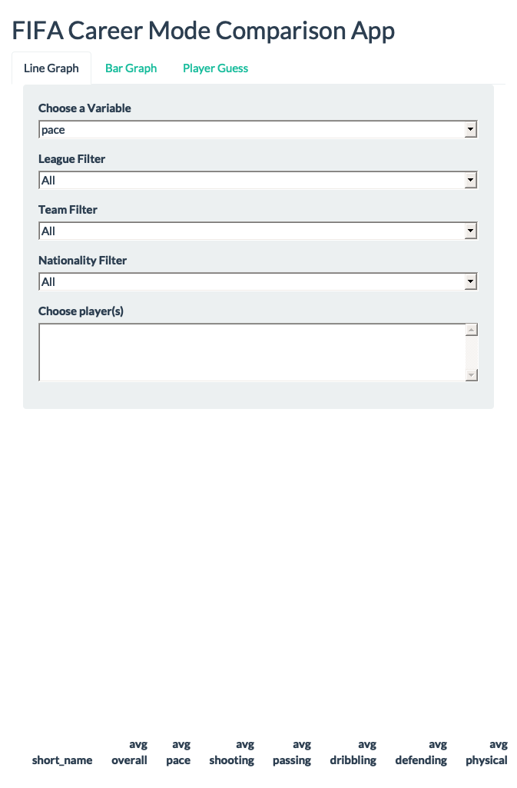

library(tidyverse)
library(shiny)
library(plotly)
library(shinythemes)
fifa_full <- read_csv("data/fifa_15_23.csv")Final Project
Written Report
Abstract
FIFA is video game where you can play soccer as real life professional players in a variety of game modes. The ratings and attributes of these players are carefully determined each year and aim to reflect the comparative quality of their current play. Using FIFA Career Mode player data from 2015-2023, I was able to build an interactive ShinyApp for the purposes of analyzing player comparisons and skill progression. The app allows the user to examine a handful of player attributes over the course of their careers and to view each central attribute for a given season. A final aspect to the app is an interactive game where the user attempts to guess the player name based on their stat line for a season and consecutive hints. The static visualizations in this report compare the respective shooting attributes of Lionel Messi and Cristiano Ronaldo throughout their careers, as well as their overall statistics for the 2023 version of the game. This app can be an effective tool for soccer and video game fans alike and provides potential for a multitude of self-guided comparisons.
Introduction
The dataset for this project comes from Kaggle and contains a wide range of FIFA player ratings and attributes from 2015-2023 Career Mode. On a FIFA card, each player has an overall rating accompanied by six central statistics: pace, shooting, passing, dribbling, defense, and physical. Aside from player statistics, the dataset also includes demographic information such as the nationality, league, and team of the players. Initially, the data included all players, male and female, yet to allow for my ShinyApp to run with better speed I used a subset of the data that only included male players with ratings of 80 and higher. The final subset contains 24 variables and 232,116 observations. The data set affords many avenues of comparison among players via demographic information and it allows for multiple comparisons of the same players across different seasons. From a longitudinal standpoint, I am particularly interested in comparing specific player attributes over the course of their careers in an attempt to see how their perceived skills in that area have changed relative to other players. Additionally, I aim to compare the central six attributes of the players within specific seasons to see how players differ in their strong suits despite sharing the same overall rating. The central goal of this project is to provide a tool for player comparison where users can select their desired players and explore their own questions of interest.
Visualizations
Line Graph Panel
fifa_line1 <- fifa_full |> filter(short_name %in% c("L. Messi", "Cristiano Ronaldo"))|>
group_by(short_name, fifa_version)|>
summarise(overall = median(overall, na.rm = TRUE),
pace = median(pace, na.rm = TRUE),
shooting = median(shooting, na.rm = TRUE),
passing = median(passing, na.rm = TRUE),
dribbling = median(dribbling, na.rm = TRUE),
defending = median(defending, na.rm = TRUE),
physic = median(physic, na.rm = TRUE))
plot1 <- ggplot(data = fifa_line1,
aes(x = fifa_version, y = shooting, color = short_name)) +
geom_point(aes(text = paste("Shooting:", shooting, "<br>Overall:", overall)))+
geom_line() +
labs(title = "Shooting Comparison Over Time", x = "FIFA Version", color = "Player", y = "Shooting")+
scale_x_continuous(breaks = c(15, 16, 17, 18, 19, 20, 21, 22, 23))+
scale_color_brewer(palette = "Set1")
table1 <- fifa_full |>
filter(short_name %in% c("L. Messi", "Cristiano Ronaldo")) |>
group_by(short_name)|>
summarise(`avg overall` = round(mean(overall, na.rm = TRUE), 2),
`avg pace` = round(mean(pace, na.rm = TRUE), 2),
`avg shooting` = round(mean(shooting, na.rm = TRUE), 2),
`avg passing` = round(mean(passing, na.rm = TRUE),2),
`avg dribbling` = round(mean(dribbling, na.rm = TRUE),2),
`avg defending` = round(mean(defending, na.rm = TRUE),2),
`avg physical` = round(mean(physic, na.rm = TRUE),2))ggplotly(plot1, tooltip = "text")The line graph displays the values of the players’ shooting attributes respectively over each version of the game. An interactive feature of the plot allows the user to hover over the points to see the value of the attribute being shown, as well as the players overall rating for that year. In the ShinyApp version of the plot, the user can select one of the six main attributes, or overall, to be plotted on the y-axis. Additionally, users can add any number of players to the plot to make multiple comparisons over the course of their careers. A final reactive component of the ShinyApp is the player filtering which allows users to select players of the same league, team, nationality, or any combination of those demographics. In the specific static plot above, we can see that Ronaldo has been attributed with better shooting ability than Messi in each version of the game, yet they both have had seasons where their overall rating is higher than the other. We can also see that Messi has seen much higher fluctuation in shooting ratings over time whereas Ronaldo has been more consistent.
knitr::kable(table1) | short_name | avg overall | avg pace | avg shooting | avg passing | avg dribbling | avg defending | avg physical |
|---|---|---|---|---|---|---|---|
| Cristiano Ronaldo | 92.94 | 90.11 | 92.88 | 81.14 | 89.62 | 33.72 | 78.43 |
| L. Messi | 93.35 | 88.28 | 90.35 | 88.43 | 95.63 | 30.48 | 62.85 |
The table above reactively shows each of the average attribute values for each selected player respectively over their time in FIFA. As we can see in this example, Messi has the higher average overall by a slim margin despite having lower averages in pace, shooting, defending and physical. Interestingly, the largest difference in average comes from physical, as Ronaldo is rated nearly sixteen points higher. It is important to note that the values of all six player attributes do not average to the player’s overall rating, as other criteria such as height, weak foot ability, and skill moves impact the assessment.
Bar Graph Panel
fifa_bar1 <- fifa_full|>
filter(short_name %in% c("L. Messi", "Cristiano Ronaldo"), fifa_version == 23)|>
pivot_longer(cols = 19:24, names_to = "stat", values_to = "value")|>
group_by(short_name, stat)|>
summarise(value = round(median(value)),
overall = round(median(overall)))
plot2 <- ggplot(fifa_bar1,
aes(x = stat, y = value, group = short_name, fill = short_name, label = value))+
geom_col(position = "dodge", color = "black")+
labs(x = "Statistics", y = "Value", title = "2023 Comparison")+
scale_fill_brewer(palette = "Set1")
table2 <- fifa_full |>
filter(short_name %in% c("L. Messi", "Cristiano Ronaldo"), fifa_version == 23) |>
group_by(short_name)|>
summarise(overall = round(median(overall)),
pace = round(median(pace)),
shooting = round(median(shooting)),
passing = round(median(passing)),
dribbling = round(median(dribbling)),
defending = round(median(defending)),
physical = round(median(physic)))ggplotly(plot2, tooltip = "label")This side-by-side barplot shows each of the central six statistics for the players that the user selects for the selected year of the game. Here, the selected players are again Lionel Messi and Cristiano Ronaldo, and the version of the game is FIFA 23. The interactive plotly features allow for the user to see the exact value of the statistics by hovering over the bars. This plot allows the user to see all of the attributes at the same time and is not limited to any amount of players. In this example, we can see that in FIFA 23, while Ronaldo has better shooting and physical, Messi has better dribbling and passing. It is interesting to see that are rated equivalently in defending and pace, and that their pace is much slower than in the previous versions of the game.
knitr::kable(table2) | short_name | overall | pace | shooting | passing | dribbling | defending | physical |
|---|---|---|---|---|---|---|---|
| Cristiano Ronaldo | 90 | 81 | 92 | 78 | 85 | 34 | 74 |
| L. Messi | 91 | 81 | 89 | 90 | 94 | 34 | 64 |
This table accompanying the bar graph displays the specific values of the attributes for the given FIFA version of the selected players. It provides another mode of comparison where the numbers are quite easy to see.
Random Player Guess Panel
random_player_table <- fifa_full|>
filter(short_name == "Neymar Jr", fifa_version == 22)|>
select(6, 11, 12, 16:24)|>
slice(1)knitr::kable(random_player_table)| overall | height_cm | weight_kg | preferred_foot | weak_foot | skill_moves | pace | shooting | passing | dribbling | defending | physic |
|---|---|---|---|---|---|---|---|---|---|---|---|
| 90 | 175 | 68 | Right | 5 | 5 | 89 | 83 | 86 | 94 | 37 | 63 |
Followed by hints that appear consecutively when you press ‘hint’.
- FIFA Version: 22
- Player Positions: LW, CAM
- Nationality: Brazil
- League Name: Ligue 1
- Club Name: Paris Saint Germain
- Player Name………………… Neymar Jr
The static version of the ShinyApp player guessing game shown above starts by showing the central six attributes, overall, height, weight, and more. It then allows the user to press ‘hint’, providing them with more and more information about the player. A new player can be generated at any time, causing the hints to be removed from the screen and reset.
Conclusion
My primary goal for this project was to to provide a tool for FIFA player comparison where the user can follow whichever questions of interest that they desire. Whether that be examining the change in player attributes over the course of their careers, delving into all aspects of a card for a specific year, or just trying to guess a player based on their knowledge of the game, I intended for the user to extract their own meaning. With that being said, I would love to be able to incorporate the full dataset into this ShinyApp, meaning that all female cards and players of all ratings would be included. I would also like to utilize the data for modeling in order to ascertain a relationship between player attributes and their overall rating. This would give an indication on which statistics are most impactful to overall. This likely depends on the version of the game, as factors like pace or physical are weighted differently from year to year. A final idea to expand upon in the future is using modeling to predict future player ratings based on a combination of past card ratings current live performance level. This would allow fans of the game to get insight into what to expect for future player ratings in upcoming FIFA games. FIFA card ratings are not precisely reflective of a players skill as their play can fluctuate heavily throughout the course of a season. Despite that, they aim to provide glimpses into current public perception of a player. I believe these ratings can be highly informative and in combination with data from active play, there are many ways to gain better insight into trends of future salary and perceived ability.
Final App Script
library(tidyverse)
library(shiny)
library(plotly)
library(shinythemes)
fifa_full <- read_csv("data/fifa_15_23.csv")
variable_choices <- names(fifa_full)[c(6, 19:24)]
ui <- fluidPage(
titlePanel("FIFA Career Mode Comparison App"),
theme = shinytheme("flatly"),
tabsetPanel(
tabPanel("Line Graph",
sidebarPanel(
selectInput("yvar", label = "Choose a Variable", choices = variable_choices, selected = "pace"),
selectInput("league_choice", label = "League Filter",
choices = c("All", unique(fifa_full$league_name)), selected = "All"),
selectInput("team_choice", label = "Team Filter",
choices = c("All", unique(fifa_full$club_name)), selected = "All"),
selectInput("nationality_choice", label = "Nationality Filter",
choices = sort(c("All", unique(fifa_full$nationality_name))), selected = "All"),
selectInput(inputId = "player_choice", label = "Choose player(s)",
choices = NULL, selected = NULL, multiple = TRUE)
),
mainPanel(plotlyOutput(outputId = "line_graph"),
tableOutput(outputId = "summary_table1")
)),
tabPanel("Bar Graph",
mainPanel(plotlyOutput(outputId = "bar_graph"),
selectInput("fifa_year", label = "Choose the Year", choices = 15:23, selected = 23),
tableOutput(outputId = "summary_table2")
)),
tabPanel("Player Guess",
sidebarPanel(actionButton("generate_player", "Generate New Random Player"),
actionButton("show_hint", "Hint"),
textOutput("hint_text1"),
textOutput("hint_text2"),
textOutput("hint_text3"),
textOutput("hint_text4"),
textOutput("hint_text5"),
textOutput("hint_text6")
),
mainPanel(tableOutput(outputId = "player_summary"),
textOutput("hint_text7")
)
)
)
)
server <- function(input, output, session) {
observeEvent(c(input$league_choice, input$nationality_choice, input$team_choice), {
player_choices <- fifa_full|> distinct(short_name) |> pull(short_name)
if (input$league_choice != "All" & input$nationality_choice == "All" & input$team_choice == "All") {
player_choices <- fifa_full |> filter(league_name == input$league_choice) |> distinct(short_name) |> pull(short_name)
}
if (input$nationality_choice != "All" & input$league_choice == "All" & input$team_choice == "All") {
player_choices <- fifa_full |> filter(nationality_name == input$nationality_choice) |> distinct(short_name) |> pull(short_name)
}
if (input$team_choice != "All" & input$nationality_choice == "All" & input$league_choice == "All") {
player_choices <- fifa_full |> filter(club_name == input$team_choice) |> distinct(short_name) |> pull(short_name)
}
if(input$league_choice != "All" & input$nationality_choice != "All" & input$team_choice == "All") {
player_choices <- fifa_full|> filter(league_name == input$league_choice, nationality_name == input$nationality_choice) |> distinct(short_name) |> pull(short_name)
}
if(input$nationality_choice != "All" & input$team_choice != "All" & input$league_choice == "All"){
player_choices <- fifa_full |> filter(club_name == input$team_choice, nationality_name == input$nationality_choice) |> distinct(short_name) |> pull(short_name)
}
if( input$league_choice != "All" & input$team_choice != "All" & input$nationality_choice == "All"){
player_choices <- fifa_full |> filter(club_name == input$team_choice, league_name == input$league_choice) |> distinct(short_name) |> pull(short_name)
}
if(input$league_choice != "All" & input$nationality_choice != "All" & input$team_choice != "All"){
player_choices <- fifa_full |> filter(club_name == input$team_choice, league_name == input$league_choice, nationality_name == input$nationality_choice) |> distinct(short_name) |> pull(short_name)
}
updateSelectInput(inputId = "player_choice",
choices = sort(player_choices))
})
observeEvent(input$league_choice, {
player_choices <- fifa_full |> distinct(short_name) |> pull(short_name)
if (input$league_choice != "All") {
team_choices <- fifa_full |>
filter(league_name == input$league_choice) |>
distinct(club_name) |>
pull(club_name)
} else {
team_choices <- unique(fifa_full$club_name)
}
updateSelectInput(inputId = "team_choice", choices = sort(c("All", team_choices)), selected = "All")
})
fifa_line_react <- reactive({
fifa_full |> filter(short_name %in% input$player_choice)|>
group_by(short_name, fifa_version)|>
summarise(overall = median(overall, na.rm = TRUE),
pace = median(pace, na.rm = TRUE),
shooting = median(shooting, na.rm = TRUE),
passing = median(passing, na.rm = TRUE),
dribbling = median(dribbling, na.rm = TRUE),
defending = median(defending, na.rm = TRUE),
physic = median(physic, na.rm = TRUE))
})
fifa_bar_react <- reactive({
fifa_full|>
filter(short_name %in% input$player_choice, fifa_version == input$fifa_year)|>
pivot_longer(cols = 19:24, names_to = "stat", values_to = "value")|>
group_by(short_name, stat)|>
summarise(value = round(median(value)),
overall = round(median(overall)))
})
i <- reactiveVal(0)
random_react <- eventReactive(input$generate_player, {
output$hint_text1 <- renderText(NULL)
output$hint_text2 <- renderText(NULL)
output$hint_text3 <- renderText(NULL)
output$hint_text4 <- renderText(NULL)
output$hint_text5 <- renderText(NULL)
output$hint_text6 <- renderText(NULL)
output$hint_text7 <- renderText(NULL)
i(0)
fifa_full |>
sample_n(1)
})
output$player_summary <- renderTable({
if (!is.null(random_react())) {
random_react() |>
select(6, 11, 12, 16:24)
}
})
observeEvent(input$show_hint, {
if (!is.null(random_react()) & i() == 0) {
output$hint_text1 <- renderText({
paste0("FIFA Version: ", random_react()$fifa_version)
})
i(1)
}else if(i() == 1){
output$hint_text2 <- renderText({
paste0("Player Positions: ", random_react()$player_positions)
})
i(2)
}else if(i() == 2){
output$hint_text3 <- renderText({
paste0("Nationality: ", random_react()$nationality_name)
})
i(3)
}else if(i() == 3){
output$hint_text4 <- renderText({
paste0("League Name: ", random_react()$league_name)
})
i(4)
}else if(i() == 4){
output$hint_text5 <- renderText({("*FINAL HINT*")})
output$hint_text6 <- renderText({
paste("Club Name: ", random_react()$club_name)
})
i(5)
}else if(i() == 5){
output$hint_text7 <- renderText({
paste0("Player: ", random_react()$long_name)
})
i(6)
}
})
output$line_graph <- renderPlotly({
req(input$player_choice)
plot1 <- ggplot(data = fifa_line_react(),
aes(x = fifa_version, y = .data[[input$yvar]], color = short_name)) +
geom_point(aes(text = paste(input$yvar,":", .data[[input$yvar]], "<br>overall:", overall)))+
geom_line() +
labs(title = "Player Comparison Over Time", x = "Year")+
scale_x_continuous(breaks = c(15, 16, 17, 18, 19, 20, 21, 22, 23))+
scale_color_brewer(palette = "Set1")
ggplotly(plot1, tooltip = "text")
})
output$bar_graph <- renderPlotly({
req(input$player_choice, input$fifa_year)
plot2 <- ggplot(fifa_bar_react(),
aes(x = stat, y = value, group = short_name, fill = short_name, label = value))+
geom_col(position = "dodge", color = "black")+
labs(x = "Statistics", y = input$fifa_year, title = glue::glue("FIFA ", input$fifa_year, " Comparison"))+
scale_fill_brewer(palette = "Set1")
ggplotly(plot2, tooltip = "label")
})
output$summary_table1 <- renderTable({
fifa_full |>
filter(short_name %in% input$player_choice) |>
group_by(short_name)|>
summarise(`avg overall` = round(mean(overall, na.rm = TRUE), 2),
`avg pace` = round(mean(pace, na.rm = TRUE), 2),
`avg shooting` = round(mean(shooting, na.rm = TRUE), 2),
`avg passing` = round(mean(passing, na.rm = TRUE),2),
`avg dribbling` = round(mean(dribbling, na.rm = TRUE),2),
`avg defending` = round(mean(defending, na.rm = TRUE),2),
`avg physical` = round(mean(physic, na.rm = TRUE),2))
})
output$summary_table2 <- renderTable({
fifa_full |>
filter(short_name %in% input$player_choice, fifa_version == input$fifa_year) |>
group_by(short_name)|>
summarise(overall = round(median(overall)),
pace = round(median(pace)),
shooting = round(median(shooting)),
passing = round(median(passing)),
dribbling = round(median(dribbling)),
defending = round(median(defending)),
physical = round(median(physic)))
})
}
shinyApp(ui, server)